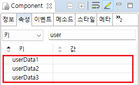

화면에 구성된 컴포넌트에 사용자 정의 값을 저장하는 기능인 userData 예제입니다. HTML의 dataset 기능과 유사하지만 dataset으로 구현한 기능은 아니기 때문에 웹스퀘어 API로 제어해야 합니다. 화면의 기능 구현 시 데이터를 컴포넌트에 설정해서 활용 할 수 있습니다. 예를 들면 화면의 상태 값이나 Generator로 구성된 반복 영역을 구분할 수 있는 값 등을 저장합니다. 이 기능은 컴포넌트의 속성과 메소드를 통해 접근할 수 있습니다.
InputBox에 스크립트로 userData1 설정하기
InputBox의 userData1 반환받기
1
'InputBox에 userData 설정하기' 버튼을 클릭합니다.
InputBox에 사용자 데이터가 설정됩니다.
'로그 확인' 영역의 textarea에 참고용 로그가 출력됩니다.
Example 1.Log
[08:04:04] ** scwin.btn_ex1_onclick 실행 **
[08:04:04] ibx_input.setUserData("userData1", "userData1 - Websquare");1
STEP 1: 'InputBox의 userData 반환받기' 버튼을 클릭합니다.
2
STEP 2: 실행 결과를 확인합니다.
CASE 1: 'InputBox에 userData 설정하기' 버튼을 클릭한 뒤라면 "userData1 - Websquare"가 alert됩니다.
CASE 2: 'InputBox에 userData 설정하기' 버튼을 클릭하지 않은 경우에는 "undefined"가 alert됩니다.
'로그 확인' 영역의 textarea에 반환 값이 출력됩니다.
Example 2.Log
[08:07:02] ** scwin.btn_ex2_onclick 실행 **
[08:07:02] ibx_input.getUserData("userData1");
[08:07:02] 반환값 : userData1 - Websquare'userData1' 속성에 값을 설정합니다.
('userData2' 또는 'userData3' 속성 또한 사용할 수 있습니다)Image 1.웹스퀘어 스튜디오의 Component View 예시

Example 3.Script
//id가 ibx_input인 컴포넌트의 예시입니다. //userData의 key는 "userData1", value는 "userData1 - Websquare"로 설정합니다. ibx_input.setUserData("userData1", "userData1 - Websquare");
Example 4.Script
//id가 ibx_input인 컴포넌트의 예시입니다. //컴포넌트의 userData 중 key가 "userData1"에 설정된 value를 반환받습니다. var strRet = ibx_input.getUserData("userData1");
userData1
userData2
userData3
getUserData( key )
setUserData( key , value )